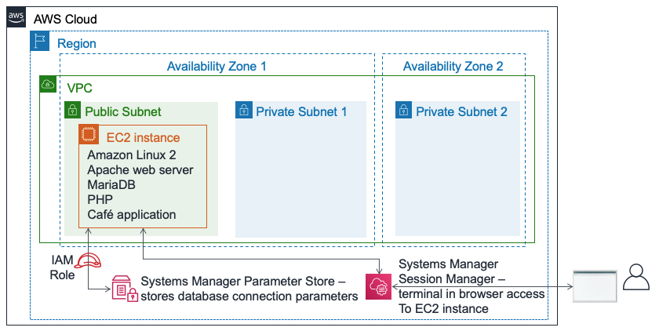
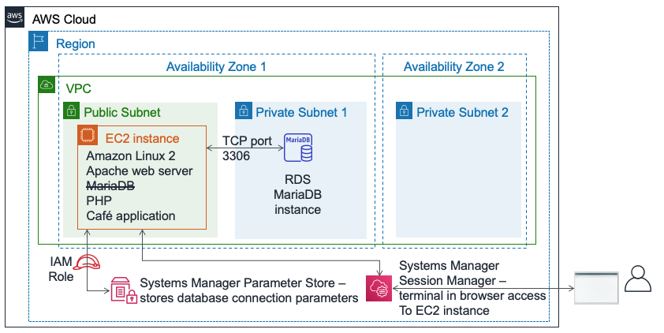
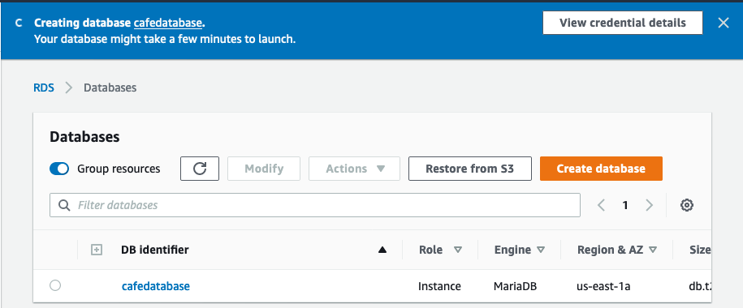
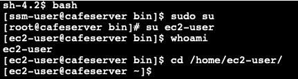
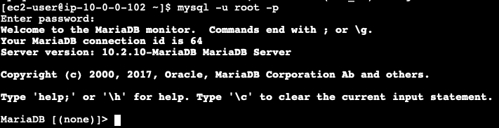
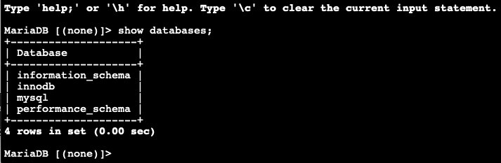

The café currently uses a single EC2 instance to host their web server, database, and application code.
Meanwhile, café business has grown. The order history that's stored in the database provides valuable business information that the café staff doesn't want to lose. Martha uses the data for accounting, and Frank looks at it occasionally to plan how many of each dessert type he should bake.
Sofía has additional concerns. The database must be consistently upgraded and patched, and she doesn’t always have time to do these tasks. Also, administering the database is a specialized skill. Training others to do database administration isn’t something that she wants to spend time on. Meanwhile, Sofía is also concerned that the café isn’t doing data backups as often as they should.
Finally, Martha also wants to reduce labor costs that are associated with the technical learning investment that's needed to manage the database.
In this lab, you will migrate data from a database on an Amazon Elastic Compute Cloud (Amazon EC2) instance to Amazon Relational Database Service (Amazon RDS). Specifically, you will migrate a MariaDB database that runs on an EC2 instance to a MariaDB database that runs on Amazon RDS. You will also update the café web application to use the new database to store data for all future orders.
After completing this lab, you should be able to:
When you start the lab, the following resources are already created for you in the AWS account:

At the end of this lab, your architecture will look like the following example:

This lab will require approximately 80 minutes to complete.
In this lab environment, access to AWS services and service actions might be restricted to the ones that are needed to complete the lab instructions. You might encounter errors if you attempt to access other services or perform actions beyond the ones that are described in this lab.
At the top of these instructions, choose Start Lab to launch your lab.
A Start Lab panel opens, and it displays the lab status.
Tip: If you need more time to complete the lab, restart the timer for the environment by choosing the Start Lab button again.
Wait until the Start Lab panel displays the message Lab status: ready, then close the panel by choosing the X.
At the top of these instructions, choose AWS.
This action opens the AWS Management Console in a new browser tab. The system automatically logs you in.
Tip: If a new browser tab does not open, a banner or icon is usually at the top of your browser with the message that your browser is preventing the site from opening pop-up windows. Choose the banner or icon, and then choose Allow pop-ups.
Arrange the AWS Management Console tab so that it displays alongside these instructions. Ideally, you will have both browser tabs open at the same time so that you can follow the lab steps more easily.
Do not change the Region unless specifically instructed to do so.
Tip: To hide the terminal, you can clear the Terminal check box at the top of the screen.
After a conversation with Olivia—the AWS solutions architect who often comes in for a coffee—Sofía decided that the café needs a database solution that is easier to maintain. In addition, the database should provide essential features such as durability, scalability, and high performance.
In the first part of this lab, you will take on the role of Sofía. You will create an RDS instance that the café can use as the data storage layer for the café website. You will also connect to the EC2 instance and analyze the details of the cafe web application.
Your first challenge in this lab is to create an RDS instance.
Create an RDS instance that complies with these specifications. (When you submit your work at the end of this lab, it will check for many of these settings. To get full credit, follow these guidelines.)
Engine type: MariaDB
Templates: Dev/Test
DB instance identifier: CafeDatabase
Username: admin
Password: Caf3DbPassw0rd!
DB Instance Class: db.t2.micro
Storage type: General Purpose (SSD)
Allocated storage: 20 GiB
Do not create a standby instance
Place it in the Lab VPC
Subnet Group: lab-db-subnet-group, where the database is not publicly accessible.
Choose existing VPC security group named dbSG, and unselect the default security group.
Availability Zone: Choose the first Availability Zone in the list, which ends in a. For example, if the Region is us-east-1, choose us-east-1a.
Database port: Keep the default TCP port of 3306.
Enhanced monitoring is not supported in the lab environment. Clear the default setting.

Important: Don't wait for the database to finish the creation process. Instead, after you have successfully started the database creation process, continue to the next step.
In this task, you will connect to the existing EC2 instance that runs the current café application.
Browse to the EC2 Console and choose Running instances.
Notice the running instance named CafeServer. This EC2 instance was created when you started the lab.
Test the café application.
Open a new browser tab and load the café application at http://<public-ip-address>/cafe.
Note: Replace <public-ip-address> with the actual IPv4 public IP address of the CafeServer instance.
Browse to the Menu page and test placing an order.
To do this, change the quantity for at least one menu item to at least 1 and choose Submit Order.
An Order Confirmation page should display, which indicates that the café website is working as intended.
Choose Order History.
The page shows that many orders were placed. The current database contains past customer orders that you will migrate to a database that's hosted on Amazon RDS.
Connect to the EC2 instance by using AWS Systems Manager to access a terminal session in the browser.
Back in the AWS Management Console, navigate to the Systems Manager Console and choose Session Manager.
Start a session and connect to the CafeServer.
You should now have a new browser tab open, with a terminal session that's connected to the EC2 instance.
At the prompt, enter the following commands:
bashsudo susu ec2-userwhoamicd /home/ec2-user/Analysis: The first command gave you a Bash shell. The second command switched your session to use the root user account on the EC2 instance. The third command switched you to use the ec2-user account. The fourth command should have returned output that confirms that you are connected as the ec2-user. The last command switches your terminal to the home directory of the ec2-user.

Note: The Systems Manager agent (ssm agent) is installed by default on all Amazon Linux 2 instances (and some other OS types). When you started the lab and the EC2 instance was created, the user data specified that the ssm agent service should be started on the instance. Also, an AWS Identity and Access Management (IAM) role that includes an IAM policy named AmazonSSMManagedInstanceCore was attached to the EC2 instance. These two actions made the instance accessible through the Systems Manager session manager.
Now that you created a new RDS instance, you can move on to the next step in the café's database migration plan. Next, you will export the data from the database that the café application currently uses. You will also establish a network connection from the EC2 instance (where the application runs) to the new RDS database instance.
In this challenge, you continue as Sofía to complete these tasks.
In this task, you will observe details about the MariaDB database that runs on the EC2 instance. You will then export existing order history data from the database by using the mysqldump utility.
Observe details of the database that runs on the EC2 instance.
In the terminal, run these commands:
xxxxxxxxxxservice mariadb statusmysql --versionThe output should show that the locally installed MariaDB database on this EC2 instance is running. It should also show the version number of the database.
Leave this browser tab open. You will use it throughout this lab.
From the panel on the left, under Application Management, choose Parameter Store.
Notice that seven parameters are stored here. The café application PHP code references these values—for example, to retrieve the connection information for the database.
/cafe/dbPassword parameter, and copy the Value to your clipboard. You will use this value in a moment.Connect to the database that is running on the EC2 instance.
In the browser tab with the Bash terminal, connect the terminal-based MySQL client to the database by running this command:
xxxxxxxxxxmysql -u root -pWhen prompted for the database password, paste the dbPassword parameter value that you copied a moment ago.
You should now see a mariadb> prompt. This prompt indicates that you are now connected to the MariaDB database that runs on this EC2 instance.

Observe the data in the existing database.
To observe the contents of the database, enter the following commands. In particular, you will review the tables that support the café web application.
xxxxxxxxxxshow databases;use cafe_db;show tables;select * from `order`;These commands show all the orders that were placed, including the order that you placed a moment ago.
xxxxxxxxxxselect * from `order_item`;This command shows the order line items. Each order number has a row for each type of item that was ordered, with details about the quantity of each item and the price.
All this data must be migrated to the new database.
Exit the SQL client.
xxxxxxxxxxexit;Capture existing data in a file by using the mysqldump utility.
xxxxxxxxxxmysqldump --databases cafe_db -u root -p > CafeDbDump.sqlWhen prompted for the database password, paste the dbPassword value from the Systems Manager Parameter Store.
Confirm that mysqldump succeeded.
Run the ls command in the terminal. The output should show that the CafeDbDump.sql file was created.
Run the cat CafeDbDump.sql command to see the contents of the file.
In the next section of the lab, you will import this data to the new RDS database.
In this task, you will first answer a few questions about the RDS instance that you created. Then, you will confirm that you can connect to the RDS instance.
Your answers will be recorded when you click the blue Submit button at the end of the lab.
Access the questions in this lab.
In the page you loaded, answer the first four questions:
Here are some tips to help you get started:
mysql -u admin -p --host <rds-endpoint>
sg- into the source field to see options).
nmap -Pn <rds-endpoint>mysql -u admin -p --host <rds-endpoint> command should also work. (However, you must enter the database password correctly. This password is the one that you set when you created the instance).
Note: If you still can't solve the issue, you might find it helpful to submit your work, as documented in the Submitting your work section at the end of these lab instructions. The submission report that is generated can provide additional tips for parts of the lab that you didn't complete successfully. You can submit your work as many times as you like. Only the score you achieve on the last submission is retained.
It's important to confirm that you can connect to the RDS MariaDB before you go to the next step. If you already managed to connect, congratulations!
Run the show databases; command. It should show this output:

exit; command.
In the previous challenge, you exported the data from the database that the café application currently uses. you also established a network connection from the EC2 instance to the RDS instance. You can now work on the next business requirement.
In this challenge, you will continue to take on the role of Sofía to import the cafe data into the RDS database instance. After you complete the import, you will configure the application to use the new database.
Import the data that you exported in task 3 to the RDS database instance.
To import the data, in the terminal, run the following command (where <rds-endpoint> is the actual endpoint):
xxxxxxxxxxmysql -u admin -p --host <rds-endpoint> < CafeDbDump.sqlAt the password prompt, enter the password for the RDS instance.
If you don't see any errors, the command likely succeeded.
Confirm that the data was imported.
To connect to the RDS database, run this command:
xxxxxxxxxxmysql -u admin -p --host <rds-endpoint>
At the password prompt, enter the password for the RDS instance.
To confirm that the data was imported, run the following command:
xxxxxxxxxxshow databases;use cafe_db;show tables;select * from `order`;The output of the select statement should show at least 24 orders in the database.
Exit the SQL client:
xxxxxxxxxxexit;
In this last task in the lab, you will be challenged to connect the café application to the new database. You will also stop the database that runs locally on the EC2 instance.
From the panel on the left, choose Parameter Store.
Recall from an earlier challenge lab that the café application's PHP code references these values. For example, it uses the values to retrieve the connection information for the database.
Connect the café application to the RDS instance.
Because the database connection information has changed, you must update these values to connect the application to the new RDS database instance instead of to the database running on the EC2 instance.
http://<public-ip>/cafe/menu.php page to test whether you have successfully updated the connection.
Confirm that your web application now uses the new database.
Stop the database that's still running on the EC2 instance. In the terminal, use this command:
xxxxxxxxxxsudo service mariadb stopLoad the http://<public-ip>/cafe/menu.php page and confirm that the application still works by placing an order.
Choose Order History. Your latest order—and all the other previous orders—should be there. These orders are the data that you migrated to the new database.
Everyone at the café is happy with the results of the database migration. Sofía and Nikhil now have more free time on weekends, which means that Frank and Martha are saving money on labor costs.
Sofía takes a minute to relax with her friends. However, she's already thinking about improvements. A good next step would be to reduce the size of the EBS volume that the EC2 instance uses. They could also save on expenses by changing the EC2 instance type to a smaller size. Because the database no longer runs on the EC2 instance, the instance now has extra hard drive space—and it might also not need as many CPU and memory resources.
At the top of these instructions, choose Submit to record your progress and when prompted, choose Yes.
If the results don't display after a couple of minutes, return to the top of these instructions and choose Grades
Tip: You can submit your work multiple times. After you change your work, choose Submit again. Your last submission is what will be recorded for this lab.
To find detailed feedback on your work, choose Details followed by View Submission Report.
Congratulations! You have completed the lab.
To confirm that you want to end the lab, at the top of this page, choose End Lab, and then choose Yes.
A panel should appear with this message: DELETE has been initiated... You may close this message box now.
©2020 Amazon Web Services, Inc. and its affiliates. All rights reserved. This work may not be reproduced or redistributed, in whole or in part, without prior written permission from Amazon Web Services, Inc. Commercial copying, lending, or selling is prohibited.